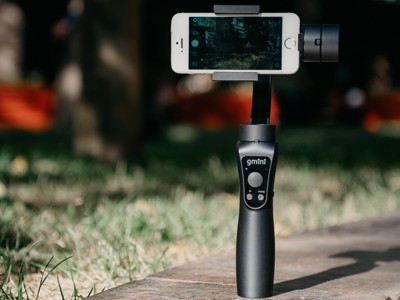

Обзор Gmini GM-STD3200B: cнимай как профи
За последние пару лет качество съёмки на смартфон выросло настолько, что даже шутки про «профессионального фотографа с айфоном» не кажутся уже такими ироничными. Сейчас на мобильные девайсы снимают фильмы, рекламу, короткометражные шоу. Чтобы повысить качество изображения, часто используют дополнительное оборудование, и самым популярным остаётся стабилизатор для видеосъёмки. Оно и понятно, ведь это самый простой способ получить чёткую и плавную картинку за относительно небольшие деньги. Сегодня выясняем, насколько хорошо для этого подходит попавший на обзор Gmini GM-STD3200B.
Для чего вообще используют мобильный стабилизатор? Чтобы получить сглаженную, плавную картинку, «как в кино», без использования дорогостоящего профессионального оборудования. Конечно, на самом-то деле, чтобы получить «как в кино», надо и снимать тем, чем там обычно снимают. Но в нашем случае речь идёт о подобии, удовлетворяющем по части качества большинство невзыскательных зрителей. То есть — нас с вами.
Первое впечатление от стабилизатора весьма приятное. Мягкий, приятный на ощупь пластик, удобная форма, благодаря которой он хорошо (в данном случае это не шутки) лежит в руке, плотные пластикатовые заглушки, отсутствие люфтов и скрипов. Немного выдаёт его китайскую принадлежность надпись «FilmMaker for Mobile», написанная странным шрифтом, но в остальном он выглядит хорошо.
Есть небольшой удобный джойстик, позволяющий управлять движением смартфона, дающий дополнительную степень свободы при съёмке. Справа на корпусе находится рычажок, управляющий зумом. Его минус в том, что приближает и отдаляет от довольно дёрганно, так что снять плавный «наезд» камеры на объект не получится. Впрочем, мало какие устройства позволяют делать плавный зум программно, и это в первую очередь относится не к рассматриваемому устройству и даже не к его ПО, а к драйверу камеры (или самой камере смартфона). Плавнее всего работает физический зум. Ну, или обычное приближение оператора вместе с камерой.
В Gmini есть три режима работы. В первом — «Панорама и наклон» — заблокирована ось крена: камера плавно продолжает движение вашей руки и гасит колебания. Второй вариант — «Режим панорамы» — оставляет незаблокированной только ось вращения и позволяет получить плавную картинку, снятую с одной точки. При использовании третьей опции «Все оси заблокированы» гаджет остаётся неподвижным, все колебания гасятся.
Использование всех режимов требует небольшой тренировки, чтобы разобраться что к чему, и какой вариант лучше использовать в определённой ситуации. За пару часов активного теста вы сможете приноровиться снимать достаточно уверенно, чтобы не теряться в режимах съёмки. Главное — не торопиться, двигать камеру плавно. Во всех режимах стабилизатор отлично справляется, сглаживая колебания и мелкую «шевелёнку», которые раздражают при просмотре видео. Обычно на экране при съёмке их не очень замечаешь, но на мониторе или телевизоре сразу становится видны все огрехи.